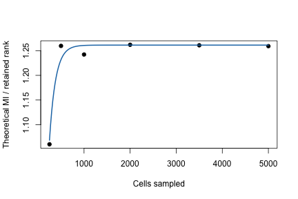

This example asks how a spectral signal estimate changes as the number of cells
increases. It starts from a real Jurkat 10x single-cell count block already
sampled in this repository: 400 highly variable genes by 5,000 cells, derived
from data/Jurkat/sample_filtered_feature_bc_matrix.
The workflow is:
fit_cell_scaling() to fit spectra across the grid;coef(), summary(), and plot();predict() to extrapolate to larger cell counts.counts_file <- file.path(
"..", "..", "..",
"outputs", "exploration", "jurkat_glmpca_gaussian_snr_by_n",
"jurkat_glmpca_counts_hvg.csv"
)
counts <- as.matrix(read.csv(counts_file, row.names = 1, check.names = FALSE))
dim(counts)
#> [1] 400 5000
summary(colSums(counts))
#> Min. 1st Qu. Median Mean 3rd Qu. Max.
#> 77 1314 1944 2294 2861 21442
The full source dataset contains many more cells; this tutorial uses a compact HVG block so it renders quickly.
sample_summary <- read.csv(file.path(
"..", "..", "..",
"outputs", "exploration", "jurkat_glmpca_gaussian_snr_by_n",
"jurkat_glmpca_sample_summary.csv"
))
sample_summary[, c("dataset", "n_total_cells", "sampled_cells", "n_genes_used", "mean_umi_per_cell")]
#> dataset n_total_cells sampled_cells n_genes_used mean_umi_per_cell
#> 1 jurkat 145628 5000 400 16220.55
fit_cell_scaling() computes the reference spectrum from the full matrix,
subsamples cells across cell_grid, computes theoretical MI with mi_theory(),
and fits a saturating curve to normalized MI.
cell_fit <- fit_cell_scaling(
counts,
cell_grid = c(250, 500, 1000, 2000, 3500, 5000),
n_features = 300,
transform = "log1p",
min_cells = 10,
r = 8,
R = 3,
p_sim = 100,
seed = 1
)
cell_fit$data
#> n_cells mean_mi sd_mi se_mi mean_mi_norm sd_mi_norm se_mi_norm
#> 1 250 8.482883 NA NA 1.060360 NA NA
#> 2 500 10.077288 NA NA 1.259661 NA NA
#> 3 1000 9.937384 NA NA 1.242173 NA NA
#> 4 2000 10.095366 NA NA 1.261921 NA NA
#> 5 3500 10.086950 NA NA 1.260869 NA NA
#> 6 5000 10.073132 NA NA 1.259142 NA NA
#> mean_lambda1_over_mp_edge mean_n_spikes n_rep_observed I_pred resid
#> 1 43.83496 10 1 1.068602 -0.0082414282
#> 2 105.73309 24 1 1.231825 0.0278359477
#> 3 130.66171 27 1 1.260565 -0.0183916373
#> 4 171.94791 35 1 1.261251 0.0006698416
#> 5 193.83437 41 1 1.261251 -0.0003824349
#> 6 205.94164 46 1 1.261251 -0.0021096958
The fitted object supports the usual R-style methods.
coef(cell_fit)
#> I_inf k
#> 1.26125122 0.00751595
summary(cell_fit)
#> type model x_col y_col n_points ok message I_inf
#> 1 cell saturating n_cells mean_mi_norm 6 TRUE ok 1.261251
#> k R2 RMSE MAE
#> 1 0.00751595 0.9634069 0.01405975 0.009605164
predict(cell_fit, data.frame(n_cells = c(7500, 10000, 20000)))
#> [1] 1.261251 1.261251 1.261251
plot(cell_fit, xlab = "Cells sampled", ylab = "Theoretical MI / retained rank")

Replace counts with another real feature-by-cell matrix or Seurat object
accepted by find_eigenvalues(). Keep the same cell grid loop, then choose the
response that best matches the biological question.